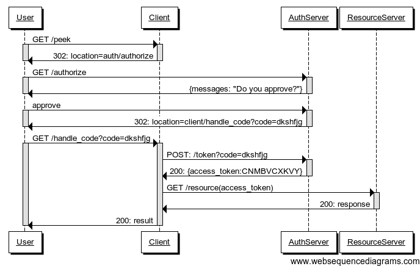

Startup and Ingestion Lvl 1
- 8:45 – 10:45 Architectural Overview & Predix Tooling
- 10:45 – 11:00 Break
- 11:00 – 12:45 Machine Setup (Dev environment)
- 12:45 – 13:45 Lunch Break
- 13:45 – 14:45 Security Model & UAA
- 14:45 – 15:00 Break
- 15:00 – 17:00 Time Series
- 17:00 – 17:30 Q&A
Paul Maritz!
Executive Chairman, Pivotal!
Predix Architecture Overview

Why such choice !

Cloud Foundry is a bit ironic
it is opinionated
It allows you to organize, simplify and lock down your IT infrastructureIt is open and flexible
- It works on multiple infrastructures (Amazon Web Services, vSphere, OpenStack...)
- It works in conjunction with your existing applications, tools and services
- It works with many languages and frameworks
CEO Perspective- Focus on the Business Domain
What is Cloud Foundry from a CEO’s perspective?
Google, Facebook, Twitter, Netflix, etc. have thousands of engineers working on their unique, consumer-grade platforms
Cloud Foundry encapsulates industry best practices in a platform, allowing enterprises to focus on their business domain
CEO Perspective- Transformational
Cloud Foundry is transformational in two ways:
- Business- it facilitates the change to agile, cloud-native software development processes
- Technology- enables a simplified, efficient, scalable infrastructure
Predix Cloud Foundry Commercialization Model
Open source software provides the basis for the platform
Commercial distribution provides value add features, enterprise services, support, docs, certs, etc.
Predix CF Components - 1.4

Predix CF Components - Diego

Load Balancer (HA Proxy)
Description:
- HAProxy is separate component from the Router
- Sits in front of the router
- By default only one instance defined
- Cloud Foundry can only have one IP address visible to outside world
- This is the Load Balancer
- It passes requests to the Router(s) to send to the right CF component
Responsibilities:
- Load-balancing across multiple routers (if used)
- SSL Termination
- Note: Typically need to configure your own HAProxy (in an HA configuration) or other load- balancer (such as F5 or NSX) for improved performance/SSL handling
(Go) Router
Description:
- Routes all incoming HTTP traffic
- System traffic (cf commands)
- Application traffic
- Maintains dynamic routing table for each load-balanced app instance
- Knows IP addresses and ports.
- Multiple routers possible
- Configured by admin in Ops Manager
- Rewritten in Go since CF 1.4 – the GoRouter
Responsibilities:
- Load balancing across application instances
- Maintaining an active routing table
- Access logs
- Supports web-sockets
UAA and Login Services
Description:
- UAA = “User Account and Authentication”
- Provides identity, security and authorization services.
- Manages third party OAuth 2.0 access credentials
- Can provide application access & identity-as-a-service for CF apps
- Composed of
- UAA Server
- Command Line Interface (UAAC)
- Library.
- Multiple UAA/Login Servers possible
Responsibilities:
- Token Server
- ID Server (User management)
- OAuth Scopes (Groups) and SCIM (System for Cross-domain Identity Management)
- Login Server
- UAA Database
- SAML support (for SSO integration) and Active Directory support with the VMWare SSO Appliance
- Access auditing
Cloud Controller (CC)
Description:
- Command and Control
- Responds to clients (CLI, App Manager, IDEs)
- Account and provisioning control.
- Provides RESTful interface to domain objects
- Apps, services, organizations, spaces, service instances, user roles, and more ...
- Multiple Cloud Controllers possible
- Configurable by Admin
Responsibilities:
- Expected Application state
- State transitions
- Permissions/Authorization
- Organizations/Spaces/Users
- Services management
- Auditing/Journaling and billing events
- Blob Storage
Cloud Controller Database (CCDB)
Description:
- Storage for application metadata
- Used exclusively by the Cloud Controller
Responsibilities:
- Stores information like
- Application Name
- # of instances requested
- Memory Limits
- Routes
- Bound Services
- A Postgres DB instance
BlobStore
Description:
- Storage for binary large objects
- Eliminates need for upload / re- staging when scaling applications
- Currently NFS mounted storage
- Or Amazon S3 store
Responsibilities:
- Stores uploaded application packages (cf push)
- Stores Droplets
- As a compressed tar file
- Or Docker containers
- Or (coming) Windows .NET applications
CC Bridge - Diego
Description:
- Translate app-specific requests into the generic language of LRP and Task
- For example requests to stage, start, stop, scale applications
- Allows existing CF components to interact with Diego
Responsibilities:
- Places requests (actions) onto the Bulletin Board to be actioned by a Cell's “Executor”
- Ensures that these actions take place (eventually)
- Tracks running processes
- Provides info on running tasks and LRPs (Long Running Processes) to Cloud Controller
- Accepts desired state of tasks and LRPs from Cloud Controller
Droplet Execution Agents / Cells
Description:
- Droplet Execution Agents (DEA's), renamed “Cells” in Diego
- Secure and fully isolated containers
- A Virtual Machine (VM)
- Periodically broadcast messages about their state
- Typically many DEA's/cells in a Cloud Foundry installation
Responsibilities:
- Managing app containers
- Monitoring resource pools
- Process, file system, network, memory
- Managing app lifecycle - starting and stopping apps as instructed
- App log and file streaming
- Sending heartbeats for health monitoring
Cell Internal Components
Rep
- Represents Cell
- Mediates BBS comms
- Bids on tasks
- Schedules them on the Executor
Receptor
- Respond to request for tasks ans desired LRPs
- Fetch information about currently running tasks and LRP instances
Executor
- Responsible for executing work (actions) given to it
- Spins up a Garden container and executes the work encoded in Task/LRP
Metron Agent
- Monitors all containers on Cell
- Provides logging and metrics to Loggregator for all apps/tasks running on Cell
Warden / Garden
Description:
- Isolated Process
- Safe, lightweight alternative to full VM
- Allows multiple applications to run on each VM
- Garden is Warden rewritten in Go
Responsibilities:
- Isolates applications running on the same VM
- Individual failures does not affect other applications on the VM
- Uses kernel namespaces to isolate network, disk, memory and CPU
- Uses Linux cgroups to do resource management
- Secures applications from environment
- Runs Droplets
Garden - Implementations
Description:
- Default implementation is Linux
- Pivotal's secure implementation of a Linux Container
- Similar to LXC using much lighter implementation
- But other implementations are
possible
- Such as Docker or Windows (coming)
- Garden is Warden rewritten in Go
Implementations:
- Default Implementation
- Runs on a Linux VM (Cell)
- Uses kernel namespaces
- Uses Linux cgroups
- Docker implementation
- Runs on a Linux VM (Cell)
- Boots and runs a Docker application
- Windows implementation
- Runs on a Windows VM (Cell)
- Runs .NET applications
- Not yet available
Cloud Foundry BOSH
Description:
- Tool chain for managing large scale distributed systems
- Release engineering
- Deployment and lifecycle management
- Continuous and predictive updates with minimal downtime
- Control primitives (CPI) written for
each underlying infrastructure
provider
- Abstraction layer for the underlying IaaS
Responsible For:
- IaaS installer
- vSphere, vCloud Air, AWS, Openstack, Azure(soon)
- VM creation and management
- Continuous and predictive updates with minimal downtime
- High Availability
- Restarts failed CF internal processes, DEA's
- CPI (Cloud Provider Interface) to control underling infrastructure (IaaS) primitives
Where do I work - Organizations & Spaces
- Top-most administrative unit
- Any Cloud Foundry installation can have multiple organizations defined in any way
- Typically a company, department, application suite or large project
- Designed to support many users working collaboratively
- Organizations contains multiple spaces
- Spaces also can be defined in any way
- For example, staging and production
- Applications and services are scoped to a space
- Provides a set of users access for:
- Application development
- Functionality and/or performance testing – Quality assurance
- Deployment to production
- Maintenance
Predix Dev Tools - Virtual Box Install
Windows Machine:
- If you have a GE laptop the antivirus will block you, you need to install an old version of virtual box: Virtual Box
- Otherwise you could use the latest and greatest Virtual Box
OSX
For OSX the easiest way to install virtual box is to use brew
brew cask install virtualbox \ virtualbox-extension-pack
Predix Dev Tools - DevBox Install
- For GE Employee go to Predix DevBox Program
- For non Ge Employee go to
- Import the Ova into Virtual Box
 The login/password is predix/predix
The login/password is predix/predix
Predix Dev Tools - DevBox Network Setup - GE Employee only
- Login to the virtual machine
- Open chrome browser go to settings and in proxy the automatic mode with : http://myapps.setpac.ge.com/pac.pac
- Check that you can have acces to https://predix.io
Predix Dev Tools - DevBox Network Setup - Non GE Employee
- If you are on a non proxied network you need to remove the proxy from the terminal
- Open a terminal and type :
sudo gedit /etc/bashrc - Go to the botton of the file and comments
export http_proxy=http://sjc1intproxy01.crd.ge.com:8080/
export https_proxy=$http_proxy
export HTTP_PROXY=$http_proxy
export HTTPS_PROXY=$http_proxy
export no_proxy="127.0.0.1,localhost,localhost.localdomain,*.ge.com"
- Open a terminal and type :
- Logout of the VM and Login again
- Open a terminal and check that the following command result is empty
- Try to download google index
- Check that you have something
env | grep http_proxy
wget https://www.google.com
cat index.html
Predix Dev Tools - DevBox Maven Setup - GE & Non Employee
- On the devbox open ~/.m2/settings.xml
- Search for this :
<server>
<id>artifactory.external</id>
<username>your.predix.io.username</username>
<password>your.encrypted.password</password>
<!-- Obtained from https://artifactory.predix.io -->
</server> - Replace username by your predix.io login (email address)
- For the password get it from artifactory
- Go to : https://artifactory.predix.io
- Login using you predix.io login and password
- Click on your name (up right)
- enter your predix.io password
- Click on the eye icon om presonnal settings to get your key
- Copy this key in place of the password in your ~/.m2/settings.xml
Predix Dev Tools - DevBox Maven Setup - Non GE Employee
- On the devbox open ~/.m2/settings.xml
- Search for proxies
- Comment the whole block
<proxies>
<proxy>
<id>corporate</id>
<active>true</active>
<protocol>http</protocol>
<host>sjc1intproxy01.crd.ge.com</host>
<port>8080</port>
<username>proxyuser</username>
<password>proxypass</password>
<nonProxyHosts>127.0.0.1,localhost,localhost.localdomain,*.ge.com</nonProxyHosts>
</proxy>
</proxies>
Predix Dev Tools - Maven Setup
- If you are on a mac or on linux copy this file settings.xml to ~/.m2/settings.xml
- Redo the same as previously
- With or without the proxy depending of your network
Predix Dev Tools - Java Language
- The Devbox comes with STS Tool suite (eclipse based IDE)
- JDK version is 1.8.0_111
- Maven version 3.3.9
- During this training we will use only the devbox for simplicity sake
- Using OSX or Linux is more efficient for heavy duty development
Predix Dev Tools - Non Java Languages
- For non Java Languages development the devbox include Atom Editor which more than sufficient for the scope of this training
- For serious development investing into a Intellij Ultimate License might be a good idea
- Node version: 6.3.0
- Npm version: 3.10.3
- Python version: 2.7.5
- Python version: 3.4.3
- gcc version: 4.8.5
Predix Dev Tools - Cf cli
- A simple, text-based Cloud Foundry client
- Used by operators and developers to access and work with any Cloud Foundry installation
- Anything you do with the CLI can be scripted/automated
- Already install on the devbox
- OSX install:
brew tap cloudfoundry/tap && brew install cf-cli - Test after install
cf --version cf version 6.22.2+a95e24c-2016-10-27
Predix Dev Tools - Cf cli primer
- Getting some help
cf --help
cf help {command}
- Login to Cf
cf login -a https://api.system.aws-usw02-pr.ice.predix.io- Enter your login and password
- Set your Org and Space
cf target -o {Orgname} -s {SpaceName}
- List services available
cf marketplace
- List running application
cf apps
- List running services
cf services
- Deploy an application
cf push -f manifest.yml- The manifest file describes what kind application you have and all its service dependencies
Predix Dev Tools - Cf cli primer suite
- Get log of your app
cf logs {AppName}- Only latest ones
cf logs --recent {AppName}
- Delete an app
cf delete {AppName}
- Get Environment of an applications
cf env {AppName}
- List running services
cf services
- Get info of a given app
cf app {AppName}
Predix Dev Tools - The .cf Directory
- cf creates a .cf directory in your home directory
- Stores context, logs, crash reports ...
- Remembers your CF API endpoint
- Don't need to specify -a option at next login
Lab - Few cf cli usage
- Set your org
- Create a space named lab
- Set target to lab1
- Create a space named lab2
- Set target to lab2
- Set target to lab
- Delete space named lab2
Lab - Few cf cli usage
cf target -o "Email"cf create-space labcf target -s "lab1"cf create-space lab2cf target -s "lab2"cf target -s "lab"cf delete-space "lab2"cf target -s "lab"
Lab - The first app
mkdir nullApp && cd nullApptouch Procfilecf push nullApp -b http://github.com/ryandotsmith/null-buildpack.git --no-start --no-route -m 64M -k 64M
- Using cf cli try to :
- Check the logs
- Try to scale it to two instances
- Try to restart the application
Predix Security Model - Architecture intro
- All inbound Communications are using ssl :
- https:// is the default and must be used as default prefix in the browser
- For web socket wss is used
- No direct tcp inbound : mqtt is not possible
- Only TLS 1.2 is possible some iot devices not supported
- Authentification is done using OAuth2.0
- In CF this role is taken by the UAA service (java service)
- Stores user account
- Stores client
- Validate token
Predix Security Model - UAA intro
- We must differenctiate two kind of usages :
- Ressource access:

- User login :
TODO
Predix Dev Tools - uaac cli
- A simple, text-based Cloud foundry uaa client
- Used by operators and developers to access and work with uaa service instances
- Anything you do with the uua cli can be scripted/automated
uaac cli - primer
- Install OSX
gem install cf-uaac
- Install Linux
TODO
- Login as admin
brew install cf-uaac
uaac cli - primer
- Set target uaa
uaa target {uaaUri}
- Get client token
uaac token client get -s {uaa_admin_secret}
- Create uaa client
uaac client add {client_id} -s {client_secret}
- Update uaa client
uaac client update {client_id} {Additional properties}
- Create a group
uaac group add {groupname}
Lab - UAA
- Using the predix.io console create an UAA service in the space lab
- Space: lab
- Instance name: uaa-lab
- Use the Free Plan
- Please keep the password
- Use lab as subdomains
- Select space lab and click on uaa-lab service, login using the password previously saved
- Add a new client lab-clientusing the Service instance ui with the following
parameters
- Scope: uaa.none openid
- Authorities: uaa.none uaa.resource
- Grant types: client_credentials
- Autoapproved: openid
Lab - UAA Automation
cf cs predix-uaa Free "uua-lab" -c
'{"adminClientSecret":"gefoundry_admin","subdomain":"lab"}'
uaac target https://lab.predix-uaa.run.aws-usw02-pr.ice.predix.io
uaac token client get admin -s gefoundry_admin
uaac client add uaa_client -s "gefoundry_nonexpire" --scope "openid uaa.none" --authorized_grant_types "client_credentials" --authorities "uaa.admin" --autoapprove "openid"